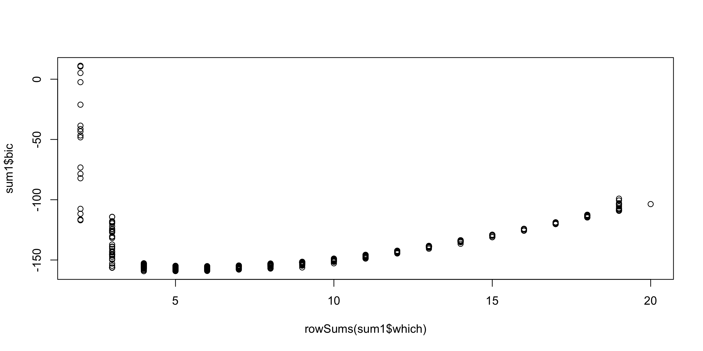

Rows: 263
Columns: 20
$ AtBat <int> 315, 479, 496, 321, 594, 185, 298, 323, 401, 574, 202, 418, …
$ Hits <int> 81, 130, 141, 87, 169, 37, 73, 81, 92, 159, 53, 113, 60, 43,…
$ HmRun <int> 7, 18, 20, 10, 4, 1, 0, 6, 17, 21, 4, 13, 0, 7, 20, 2, 8, 16…
$ Runs <int> 24, 66, 65, 39, 74, 23, 24, 26, 49, 107, 31, 48, 30, 29, 89,…
$ RBI <int> 38, 72, 78, 42, 51, 8, 24, 32, 66, 75, 26, 61, 11, 27, 75, 8…
$ Walks <int> 39, 76, 37, 30, 35, 21, 7, 8, 65, 59, 27, 47, 22, 30, 73, 15…
$ CAtBat <int> 3449, 1624, 5628, 396, 4408, 214, 509, 341, 5206, 4631, 1876…
$ CHits <int> 835, 457, 1575, 101, 1133, 42, 108, 86, 1332, 1300, 467, 392…
$ CHmRun <int> 69, 63, 225, 12, 19, 1, 0, 6, 253, 90, 15, 41, 4, 36, 177, 5…
$ CRuns <int> 321, 224, 828, 48, 501, 30, 41, 32, 784, 702, 192, 205, 309,…
$ CRBI <int> 414, 266, 838, 46, 336, 9, 37, 34, 890, 504, 186, 204, 103, …
$ CWalks <int> 375, 263, 354, 33, 194, 24, 12, 8, 866, 488, 161, 203, 207, …
$ League <fct> N, A, N, N, A, N, A, N, A, A, N, N, A, N, N, A, N, N, A, N, …
$ Division <fct> W, W, E, E, W, E, W, W, E, E, W, E, E, E, W, W, W, E, W, W, …
$ PutOuts <int> 632, 880, 200, 805, 282, 76, 121, 143, 0, 238, 304, 211, 121…
$ Assists <int> 43, 82, 11, 40, 421, 127, 283, 290, 0, 445, 45, 11, 151, 45,…
$ Errors <int> 10, 14, 3, 4, 25, 7, 9, 19, 0, 22, 11, 7, 6, 8, 10, 16, 2, 5…
$ NewLeague <fct> N, A, N, N, A, A, A, N, A, A, N, N, A, N, N, A, N, N, N, N, …
$ logYears <dbl> 1.1461280, 0.4771213, 1.0413927, 0.3010300, 1.0413927, 0.301…
$ logSalary <dbl> 2.676694, 2.681241, 2.698970, 1.961421, 2.875061, 1.845098, …Methods for model selection
Data Mining - CdL CLAMSES
Tommaso Rigon
Università degli Studi di Milano-Bicocca
Homepage

In this unit we will cover the following topics:
- Best subset regression
- Principal component regression
- Ridge regression
- Lasso, LARS, elastic-net
The common thread among these topics is the so-called variable selection problem.
In other words: what do we do when we have many irrelevant variables?
The Hitters dataset
We consider the
Hittersdataset, which contains information about n = 263 Major League Baseball players from the 1986 and 1987 seasons.We want to predict the Salary of 1987 of each player, as a function of several covariates:
- number of hits/runs/walks in 1986 and during the whole career up to 1986
- number of years in the major leagues
- …
The logarithmic transformation of two variables has been considered,
The dataset is available in the
ISLRR package.
A glimpse of the Hitters dataset
asd
Best subset regression
The wrong way of doing cross-validation
Consider a regression problem with a large number of predictors, as may arise, for example, in genomic or proteomic applications.
A typical strategy for analysis might be as follows:
- Screen the predictors: find a subset of “good” predictors that show fairly strong (univariate) correlation with the class labels;
- Using just this subset of predictors, build a regression model;
- Use cross-validation to estimate the unknown tuning parameters (i.e. degree of polynomials) and to estimate the prediction error of the final model.
Is this a correct application of cross-validation?
If your reaction was “this is absolutely wrong!”, it means you correctly understood the principles of cross-validation.
If you though this was an ok-ish idea, please read Section 7.10.2 of HTF (2009).
Ridge regression
Lasso, LARS, and elastic-net
Lasso
- asdasd
References